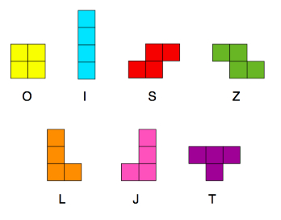
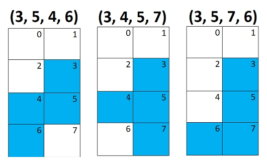
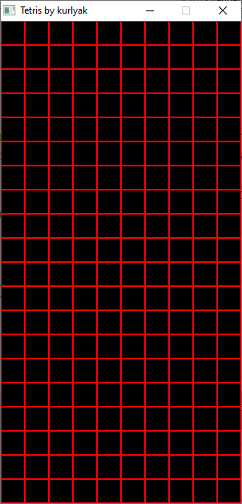
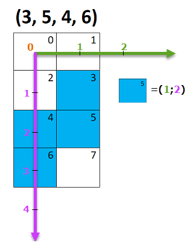
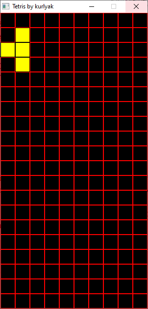

Пример исходного кода можно загрузить ЗДЕСЬ. Пример разработан на С++ WinAPI Visual Studio 2019. Код хорошо прокомментирован.
На игровом поле Тетрис находятся фигуроки, которые называються Тетрамино (как сказано в Википедии).
Тетрамино из игры Тетрис представлены на рисунке ниже.
Всего в игре Тетрис может быть 7 таких фигурок.
Каждая фигурка Тетрамино состоит из 4 квадратов.
Самая большая фигрука Тетрамино по высоте занимает 4 квадрата, и самая большая фигурка по ширине занимает 2 квадрата. Поэтому очень удобно хранить описание одного Тетрамино так как представлено на рисунке ниже.
Для хранения всех фигурок тетрамино можно задать массив 7х4 где 7 это количество Тетрамино в Тетрисе, а 4 это максимальное количество квадратов из которых состоит одно Тетрамино.
Причем не важно в каком порядке следуют закрашенные квадраты на рисунке выше, важен лишь сам факт- закрашен квадрат или нет. Поэтому для первой фигуры к квадратами (3, 5, 4, 6) в соответствие можно поставить как набор (5, 3, 4, 6) так и (3, 5, 6, 4).
Игровое поле можно представить в виде массива целых чисел. В нашем примере по ширине поле имеет 10 квадратов, и по высоте 20 квадратов (рисунок ниже).
Подитожим наши знания и рассмотрим исходный код примера (файл MyApp.h).
#define SCALE 30 //размер одного квадрата на игровом поле в пикселях
#define N 10 //ширина игрового поля в квадратах
#define M 20 //высота игрового поля в квадратах
//вычисляем размер окна для игры Тетрис в пикселях
//вычисления необходимы для задания размера
//окна приложения WinAPI функция CreateWindow()
#define WINDOW_WIDTH N * SCALE
#define WINDOW_HEIGHT M * SCALE
//задаем игровое поле Тетриса (размер в квадратах не в пикселях)
int field[M][N] = { 0 };
//массив с описанием всех 7 фигурок Тетрамино
int figures[7][4]=
{
1,3,5,7, // I
2,4,5,7, // S
3,5,4,6, // Z
3,5,4,7, // T
2,3,5,7, // L
3,5,7,6, // J
2,3,4,5, // O
};
Следущий шаг - привязка Тетрамино к игровому полю. Для этого нужно локальные координаты Тетрамино перевести в координаты игрового поля. На экране отсчет координат начинаеться в верхнем левом углу, как на рис. ниже.
Для примера размещения Тетрамино на игровом поле возьмем Z тетрамино (рис.выше). Видно, что квадрат Тетрамино №5 будет иметь координаты (1;2), квадрат №6 будет иметь координаты (0;3) и т.д.
Добавим немного математики - если номер клетки Тетрамино разделить с остатком на 2 получим столбец, колонку если делить 2 нацело. Тогда квадратик Тетрамино №5 будет иметь координаты (1;2) = (5 % 2; 5 / 2). В С++ программировании оператор % — это остаток от деления, а оператор / — частное от деления (деление нацело)
Следущий шаг отображение Тетрамино на игровом поле. Для этого создадим структуру Point.
struct Point
{
int x, y;
} a[4],b[4];
Затем с помощью первого цикла for мы переведем «локальные» координаты каждого отдельного кусочка тетрамино в «глобальные», а затем с помощью второго цикла for отобразим это всё на игровом поле. При этом стоит учитывать, что размеры отдельного квадрата Тетрамино составляют 30×30 пикселей.
void CMyApp::RenderScene()
{
static bool begin_Game = true;
//1)создаем тетримино на игровом поле
//переводим локальные координаты тетрамино
//в глобальные координаты игрового поля
//перемення n хранит номер тетрамино
//в массиве (т.е. какой тетрамино рисовать)
if(begin_Game)
{
begin_Game = false;
srand((unsigned)time( NULL ));
n = rand() % 7;
for (int i = 0; i < 4; i++)
{
a[i].x = figures[n][i] % 2;
a[i].y = figures[n][i] / 2;
}
}
//2)рисуем тетрамино которое движется вниз используя функцию WinAPI Rectangle()
for (int i = 0; i < 4; i++)
{
hBrush = CreateSolidBrush(RGB(colors[n].r, colors[n].g, colors[n].b));
hOldBrush = (HBRUSH)SelectObject(hBackBuffer, hBrush);
// Устанавливаем позицию каждого кусочка тетрамино
Rectangle( hBackBuffer, a[i].x * SCALE, a[i].y * SCALE,
(a[i].x + 1) * SCALE, (a[i].y + 1) * SCALE );
SelectObject(hBackBuffer, hOldBrush);
DeleteObject(hBrush);
DeleteObject(hBrush);
}
На данном этапе мы нарисовали одно тетрамино (см.рисунок ниже).
Как устроено вращение одного тетрамино. Тут пригодятся знания линейной алгебры- вращение 2D.
//вращение вокруг точки с координатами x_0 и y_0 //вращаем точку с координатами x и y //вращение 2D то есть вокруг оси Z //результат поворота точки (x,y) вокруг (x_0, y_0) будет храниться в (X,Y) X = x_0 + (x − x_0) * cos(a) − (y − y_0 ) * sin(a); Y = y_0 + (y − y_0) * cos(a) + (x − x_0 ) * sin(a);
В Тетрисе все повороты фигур идут на 90 градусов. Известно что:
sin(90 degree) = 1 cos(90 degree) = 0
Поэтому вышеприведенную формулу поворота вокруг оси Z можно сократить, и она будет выглядеть так:
X = x_0 − (y − y_0); Y = y_0 + (x − x_0);
Вертикальное перемещение тетрамино осуществляется 1 клетка вниз раз в 20 кадров. В игре стоит ограничивающая FPS функция до 30 кадров в секунду. В ускоренном режиме тетрамино движеться 1 клетка вниз за 1 кадр.
Сначала в игре рисуется все игровое поле, а после рисуется одно текущее тетрамино которое движется вниз.
Данный пример в статье реализован на C++ WinAPI Visual Studio 2019. Оригинал статьи предлагает реализацию на Visual Studio 2015 и при помощи библиотеки SFML.
Часть 1 оригинальной статьи находиться здесь Часть №1: Создание игры «Тетрис» на С++/SFML
Часть 2 оригинальной статьи находиться здесь Часть №2: Создание игры «Тетрис» на C++/SFML
Часть 3 оригинальной статьи находиться здесь Часть №3: Создание игры «Тетрис» на С++/SFML